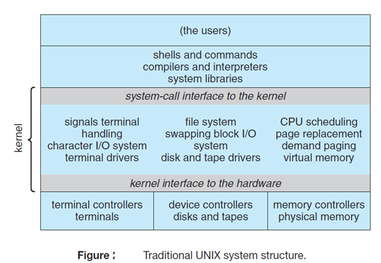
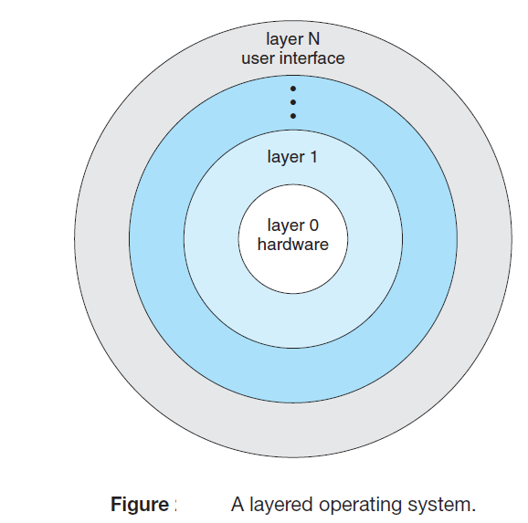
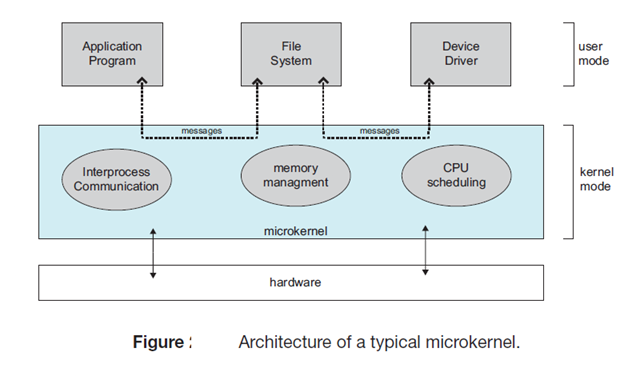
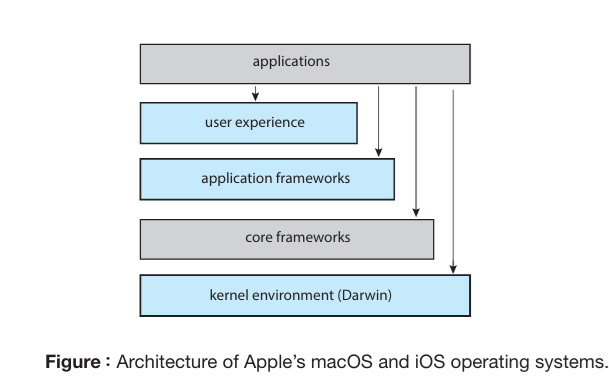
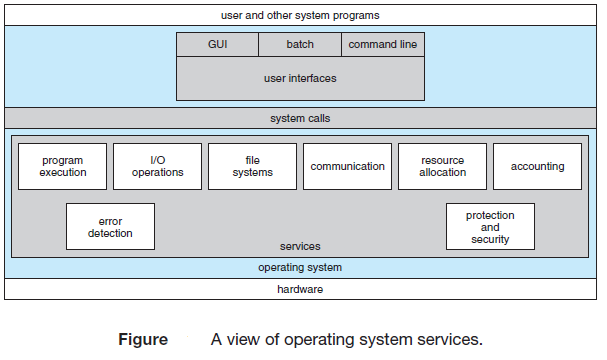

Operating System: Module 1 (Exam Notes)
"An Operating System (OS) is a system program that acts as an intermediary between the computer user and the hardware, managing resources and providing a basis for applications."
1. System Boot
Definition: Booting is the procedure of starting a computer by locating the kernel, loading it into main memory, and starting its execution.
- Bootstrap Program: The initial small piece of code that runs when a computer is powered up or rebooted.
- Role of ROM/Firmware: The bootstrap program is stored in Read-Only Memory (ROM) or firmware. This is essential because RAM is in an unknown, volatile state at startup. ROM is convenient as it needs no initialization and is highly resistant to computer viruses.
- Execution Steps:
- The CPU instruction register is loaded with a predefined memory location to start execution.
- Runs hardware diagnostics to determine the machine's state.
- Initializes all system aspects (CPU registers, device controllers, memory contents).
- Two-Step Booting (PCs/Large OS): For large OS, the bootstrap loader in firmware only runs diagnostics and fetches a more complex boot block (block zero) from the disk. This boot block contains a program sophisticated enough to traverse the file system, load the entire OS kernel into memory, and begin execution.
2. Objectives of Operating System
An OS acts as an interface between applications and computer hardware with three primary objectives:
- Convenience: To make the computer system more convenient and user-friendly to use.
- Efficiency: To allow the computer system's hardware resources (CPU, memory, storage) to be managed and utilized in an efficient manner.
- Ability to Evolve: An OS should be constructed in a modular way to permit the effective development, testing, and introduction of new system functions without interfering with existing services.
3. Functions of Operating System
The OS acts as a Resource Manager, controlling the movement, storage, and processing of data.
- Process Management: Manages the execution of multiple programs, determines how much processor time is devoted to a user program, and schedules CPU tasks.
- Memory Management: Jointly controls the allocation of main memory (RAM) alongside hardware, preventing conflicts between running applications.
- File Management: Organizes, stores, retrieves, and secures files and directories across storage devices.
- Device (I/O) Management: Decides when an I/O device can be used by a program and communicates with hardware peripherals via drivers.
- Security & Protection: Protects system resources with user authentication and permissions.
- Error Detection & Handling: Identifies and addresses system errors to maintain stability.
- Job Accounting: Tracks resource usage by specific users or processes.
4. Operating System Structure and Operations
A. Operating System Structure
Different architectures dictate how the OS kernel is designed and organized:
-
1. Monolithic Structure: All functionality of the kernel is placed into a single, static binary file running in a single address space. It is a tightly coupled system.
Advantages: Highly efficient execution speed since everything is combined.
Disadvantages: Difficult to implement and maintain; a change in one part affects the whole system. Interfaces are not well separated.
Examples: Original UNIX, MS-DOS. -
2. Layered Approach: A loosely coupled system where the OS is broken into a number of layers (levels). The bottom layer (Layer 0) is the hardware, and the highest layer (Layer N) is the User Interface.
Advantages: Simplifies construction and debugging. Each layer only uses functions from lower-level layers, allowing isolated testing. Provides information hiding.
Disadvantages: Less efficient due to multiple layer traversals. Difficult to appropriately define what belongs in which layer. -
3. Microkernels: Removes nonessential components from the kernel and implements them as user-level programs residing in separate address spaces. The kernel only provides minimal process/memory management and communication via message passing.
Advantages: Extremely secure and reliable (if a user-level service fails, the core OS remains untouched). Easier to extend without modifying the kernel.
Examples: Mach, Apple's Darwin kernel. -
4. Loadable Kernel Modules (LKMs): The kernel provides a set of core components and links in additional services (like device drivers or file systems) dynamically via modules during boot or runtime.
Advantages: Highly flexible (modules can call any other module, unlike strict layering) and efficient (no message passing required, unlike microkernels). No need to recompile the kernel for new features.
Examples: Modern Linux, Solaris. -
5. Hybrid Systems: Very few modern OS use a single strict structure. They combine structures for performance, security, and usability.
Examples: macOS and iOS (combines Mach microkernel and BSD UNIX), Windows 10 (Monolithic but with microkernel behaviors like dynamic modules).




B. Operating System Operations
Once booted, the OS waits for events to occur. Modern operating systems are Interrupt Driven.
- Hardware Interrupts: Triggered by devices (e.g., keyboard press, disk read completion) sending a signal to the CPU.
- Software Interrupts (Traps/Exceptions): Triggered by software errors (e.g., division by zero, invalid memory access) or by user programs requesting OS services via a System Call.
5. Operating System Services
The OS provides specific services categorized into two main goals:
A. Services that are helpful to the User:
- User Interface (UI): Providing environments like Command-Line (CLI), Graphical (GUI), or Batch interfaces.
- Program Execution: Loading programs into memory, running them, and handling normal/abnormal termination.
- I/O Operations: Allowing programs safe access to files or I/O devices (like printers or displays) without needing direct hardware control.
- File-System Manipulation: Reading, writing, creating, deleting, and searching files/directories, as well as managing permissions.
- Communications: Allowing processes to exchange information either via shared memory or message passing.
- Error Detection: Constantly monitoring CPU, memory, and I/O to halt or correct errors, ensuring consistent computing.
B. Services for ensuring efficient System Operation:
- Resource Allocation: Distributing limited resources (CPU cycles, memory, storage) among multiple concurrent users or jobs.
- Accounting: Keeping track of which users consume which resources for billing or usage statistics.
- Protection and Security: Ensuring controlled access to system resources and authenticating external users to prevent interference or break-ins.

6. Multiprogramming, Multitasking & Multithreading
A. Multiprogramming (Batch Systems)
Designed to maximize CPU utilization by organizing programs so the CPU always has one to execute. A subset of total jobs is kept in memory. When the currently executing process has to wait (e.g., for user input or I/O completion), the OS simply switches to execute another process. The primary goal is that the CPU is never idle.
B. Multitasking (Time-Sharing)
A logical extension of multiprogramming. The CPU executes multiple processes by switching among them, but these switches occur so frequently and rapidly that it provides users with a fast response time (typically < 1 second). This creates an interactive computing environment where multiple users can share the system simultaneously. It heavily utilizes CPU scheduling and Virtual Memory (to execute processes larger than physical RAM).
C. Multithreading
A Thread is the basic unit of CPU utilization. It comprises a thread ID, a program counter, a register set, and a stack. While a traditional process has a single thread of control, a multithreaded process contains multiple threads that share the same code section, data section, and OS resources (like open files).
Example benefit: A word processor can use one thread to respond to keystrokes, another to display graphics, and a third to run spell-check simultaneously in the background.
7. Types of Operating System
- Serial Processing: The earliest phase (1940s) where no OS existed. Programmers interacted directly with hardware using punch cards, toggle switches, and display lights.
- Simple Batch Systems: Uses a "monitor" software. Users submit jobs to an operator who batches them sequentially on an input device. The monitor automatically loads the next job to save setup time.
- Multiprogrammed Batch Systems: Expands memory to hold multiple user programs. If one job waits for I/O, the processor switches to another, drastically reducing idle time.
- Time-Sharing Systems: Processor time is shared among multiple users simultaneously accessing terminals. The OS interleaves execution in short bursts (quantums).
- Mainframe Operating Systems: Designed for room-sized corporate data centers managing massive disk/data arrays. They offer batch, transaction processing, and time-sharing services.
- Server Operating Systems: Run on powerful networks, allowing multiple users to share hardware/software resources (like print, file, or Web services).
- Multiprocessor Operating Systems: Special OS designed to manage multiple interconnected CPUs (parallel computers/multicore chips) operating as a single system.
- Personal Computer (PC) Operating Systems: Designed to provide excellent support and multiprogramming to a single desktop/laptop user (Windows, macOS, Linux).
- Handheld Operating Systems: Powers small devices (smartphones/tablets). They manage multicore CPUs, sensors, GPS, and third-party apps (Android, iOS).
- Embedded Operating Systems: Controls specialized devices (microwaves, car engines). Software is in ROM, and no untrusted/downloadable software is ever executed, leading to simpler security designs.
- Sensor Node Operating Systems: Tiny, battery-powered event-driven OS (like TinyOS) that manage wireless communication and measurements based on external triggers.
- Real-Time Operating Systems (RTOS): Used where "Time" is the key parameter.
Hard RTOS: Missing a deadline causes permanent failure (e.g., industrial robotics).
Soft RTOS: Missing an occasional deadline is acceptable (e.g., streaming audio/video). - Smart Card Operating Systems: The smallest OS running on credit-card-sized CPU chips with severe power/memory constraints (e.g., Java-oriented JVM cards).
8. Types of System Calls
Definition: System calls provide the crucial programming interface connecting currently running user programs to the services made available by the OS. They are typically accessed via high-level API routines written in C and C++.
System calls are grouped into five major categories:
- Process Control: Creating or terminating processes, loading/executing code, getting/setting process attributes, waiting for time/events, allocating and freeing memory. (e.g., fork(), exit(), wait())
- File Management: Creating, deleting, opening, closing, reading, writing, and repositioning files, as well as managing file attributes. (e.g., open(), read(), write())
- Device Management: Requesting and releasing peripheral devices, reading/writing to devices, and logically attaching or detaching them. (e.g., ioctl())
- Information Maintenance: Getting or setting system time, date, and overall system data. Transferring attributes between the OS and user programs. (e.g., getpid(), alarm())
- Communications: Creating or deleting communication connections, sending and receiving messages across networks, and transferring status info. (e.g., pipe(), mmap())